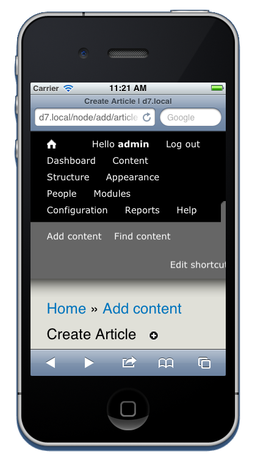

Drupal 8
What You Need To Know
I'm Matthew Tift
Twin Cities Drupal Camp organizer
Developer at Wisconsin Public Radio
Drupal core contributor (since 2010)
Formerly a musicology professor
Acknowledgements
Jess Myrbo (xjm)
Cathy Theys (YesCT)
Angela Byron (webchick)
Jen Lampton (jenlampton)
Gábor Hojtsy (Gábor Hojtsy)
Dries Buytaert (Dries)
Larry Garfield (Crell)
Kristof De Jaeger (swentel)
Today
D8: The Big Picture
Major D8 Initiatives
How You Can Help
Drupal 8 Timeline
Jan 2011: Drupal 7.0 Release
Mar 2011: D8 Development Begins
Feb 2013: Feature Freeze
Jul 2013: API Freeze
Current: Polish phase
When should I
move to Drupal 8?
2014
(According to Dries)
What is exciting about Drupal 8?
D8 Initiatives
Mobile
Configuration Management
HTML5
Layouts
Multilingual
Views in Core
Web Services
Related Efforts
Successful, if not "Official"
Spark
Drupal 7 distribution
Incubator for Drupal 8
Focus on authoring experience
Twig
Template engine for PHP
Fast, Secure, Flexible
Convert all the .tpl.php files to .twig
Nearly 30 Other Community Initiatives
Status: July 2012

Current Status
Drupal 8
Mobile Initiative
Dries Buytaert
March 8, 2011
"If I were to start Drupal from scratch today, I'd build it for mobile experiences first, and desktop experience second."
Step One
D7 Documentation
All D8 Themes:
Responsive
✓ Bartik
✓ Stark
✓ Seven
D7 Problem:
Mobile
Experience
D8 Solution:
Mobile
Experience
D7 Problem:
Mobile Menus

D8 Solution:
Responsive Toolbar
(Spark)
D7 Problem:
Adding Mobile
Content
D8 Solution:
Responsive
Admin Screens
Breakpoint Module
Picture Module
Usability
CKEditor
CKEditor In Core
(Spark)
Form Editing
In-Place Editing
Select Multiple Files
Multiple Upload
Drag-n-Drop
D8 Usability:
How You Can Help
groups.drupal.org/usability
Lead: Bohjan Somers & Roy Scholten
Issue Tag: usability
IRC: #drupal-usability
Drupal 8:
Configuration Management
D7 Problem:
No good way to move Drupal configuration information between environments
D7 Problem:
Every module stores their configuration data in a different format
D8 Configuration API
Provides a central place for modules to store configuration data, such as site name or image styles
CMI for Developers
Replaces functions like variable_get()
$config = config('prefix.name');
$config->get('my.value');
$config->set('my.value','my new value');
$config->save();
Configuration data
stored in YAML files
/sites/default/files/config_xxx/active/system.site.yml
name: d8.local
mail: admin@example.com
slogan: ''
page:
403: ''
404: ''
front: node
admin_compact_mode: '0'
weight_select_max: '100'
langcode: en
Lots of .yml files

New Rule
"Don't hack core"
is replaced by
"Don't hack your active config"
in Drupal 8
-Alex Pott, Drupal Core and CMI Maintainer
.info files are now
.info.yml files
Drupal 8: HTML5

Switch Drupal's
default doctype from
XHTML to HTML5
HTML5 Form Elements
url, email, tel, date, color, range, number, search, and more!
Drupal 8:
Blocks and Layouts
D7 Problem:
Blocks vs elements
Only one layout
Multiple instances of a single block
D8 Solution:
Plugin API
Replaces hook_info()
Changes how developers extend Drupal
Reusable code components
D7 Problem:
Not possible to remove English
Manually download language files
Translating description, alt, title, tags
Bazillion modules needed
Choose Language on First Screen
Nearly 100 languages available
English is now optional
Automatic Translation Importing
Easier right to left styling
Entity Translation API
Drupal 7
$field = field_info_field('field_foo');
$langcode = field_is_translatable($entity_type, $field) ? $active_langcode : LANGUAGE_NONE;
$value = $entity->field_foo[$langcode][0]['value'];
Drupal 8
$translation = $entity->getTranslation($active_langcode);
$value = $translation->field_foo->value;
Multilingual:
How You Can Help
drupal8multilingual.org
Lead: Gábor Hojtsy
Issue Tag: D8MI
IRC: #drupal-i18n
Sunday: YesCT Sprint!
Drupal 8: Views in Core
Views in Core
Born here at Twin Cities Drupal Camp in 2012
Views
Merged into core on
Oct. 22, 2012
No Wait for Views
Views in Core Highlights
Uses the new plugin system
All views go to disk
Views exported as YAML (using CMI)
HTML tables are responsive
Views Bulk Operations
Support for REST and data serialization
Homepage is a VIEW
Content and People Pages are views
Views In Core:
How You Can Help
Issue Tag: VDC
IRC: #drupal-vdc
D7 Problem:
Drupal assumes it will be delivering a blog-like HTML page
The Web Services and Context Core Initiative (WSCCI) aims to transform Drupal from a first-class CMS to a first-class REST server with a first-class CMS on top of it
Symfony2
HttpKernel component
Handles web requests

REST/serialization support
Expose any View as a serialized resource collection
Guzzle HTTP client library
Added to replace drupal_http_request()
Unit-Testable Code
Dependency Injection Container to help make code more unit testable

Drupal 8 is a web service
Twig
New template engine

tpl.php files are gone
Bye-bye template process layer and process functions
template_process_HOOK() MODULE_process_HOOK() THEME_process_HOOK()
TCDC: Saturday 1 PM
"Twig & The New Theme Layer in Drupal 8"
jenlampton and Cottser
PSR-0 compatible
class loader in core
Symfony2 ClassLoader
Composer to handle Drupal Core PHP dependencies

Internet Explorer 6/7/8 no longer fully supported
Modules in /modules
Themes in /themes
/sites/all/ is still supported
Improved Accessiblity
TCDC: Saturday at 2:15 PM
"Accessible in 8"
jessebeach
Anthony Ferrara (ircmaxell)
Drupal 8 is getting more object oriented, but there still many, many hooks
Sprints on Sunday
9:30 AM to 5 PM
Nerdery (Bloomington)
Core, Twig, Media Module
Breakfast bar, coffee, pizza, Red Bull, pop
Great place to learn and contribute!

{kind=link}
{kind=link}